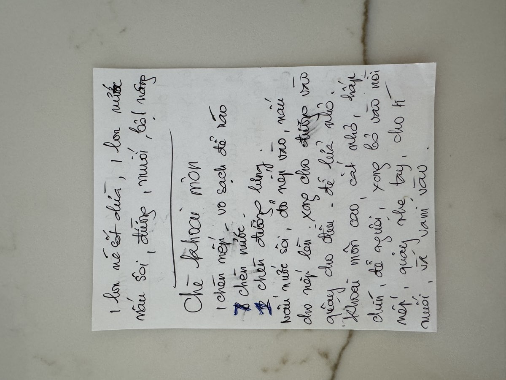

← Back to recipes
Chè Khoai Môn
Taro Sweet Soup
From Mẹ — Oanh
Nguyên liệu · Ingredients
- 1 pound taro (khoai môn), peeled and cut into small pieces
- 1 cup sticky rice (gạo nếp), rinsed
- 1 can (13.5 oz) coconut cream (nước cốt dừa)
- 2 cups sugar, or to taste (đường)
- 6–10 cups water
- Pinch of salt (muối)
Cách làm · Instructions
- Rinse the sticky rice and soak it for at least 1 hour. This helps it cook evenly and become properly soft in the chè.
- Peel the taro, cut into small pieces, and steam until tender.
- Rinse the sticky rice. Bring the water to a boil. Add the sticky rice and cook until soft, stirring gently.
- Add the sugar and salt. Stir until the sugar dissolves. Reduce heat to low.
- When the taro is nearly done, add it to the pot. Stir gently.
- Add the coconut cream and stir to combine. Simmer together briefly.
- Serve warm in bowls.
Công thức gốc · Original handwritten recipe

❦
A recipe from Mẹ's kitchen